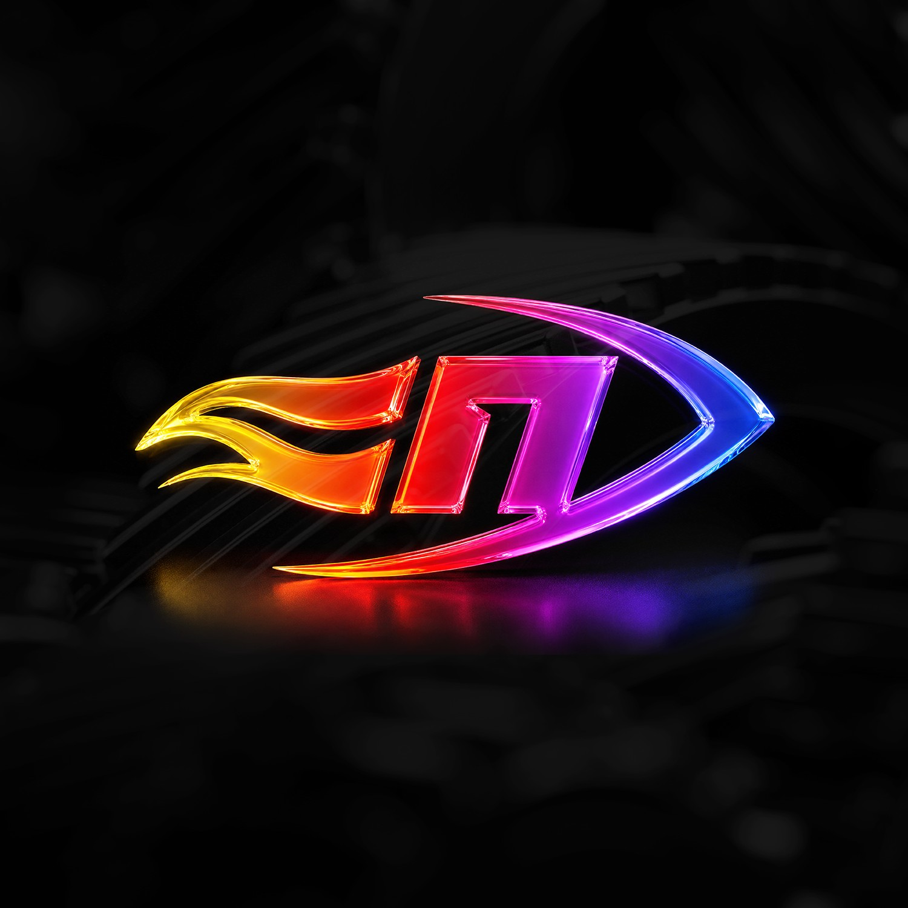

87%
гејм девелопери користат агенти со вештачка интелигенција
Google Cloud / Harris Poll, 2025

ПОГОН 2026 / Мартин Петковски
Кратко претставување
Програмер во KAMAi MEDIA од 2017
3D видео игри
Магистер по Компјутерски науки и инженерство
Мој код напојува игри на Angelicore, Crytek, Star Stable и други
Unreal Engine, Unity, CryEngine, C++, C#
Зошто е важно сега?
87%
гејм девелопери користат агенти со вештачка интелигенција
Google Cloud / Harris Poll, 2025
90%
веќе користат вештачка интелигенција во работниот процес
Google Cloud, Devcom 2025
36%
директно користат генеративна вештачка интелигенција
GDC State of the Game Industry 2026
Извори: Google Cloud / GamesBeat, GDC 2026 SOTI
Зошто е важно сега?
$22.6B
проектиран пазар на вештачка интелигенција во игри до 2034
$4.8B во 2025, DataIntelo
20%
нови Steam игри пријавуваат генеративна вештачка интелигенција
Steam анализи на објави, 2025
Извори: DataIntelo, Steam анализи на објави
Лоши употреби
Целосна функционалност од почеток до крај
LLM може да ја промаши намерата на дизајнот, граничните случаи и деталите за интеграција.
Зошто е опасно во гејмдев?
Системите се комплексни и меѓусебно поврзани, потребен е огромен контекст за да може да се интегрира системот во целост.
Лоши употреби
Без сериозна човечка проверка
Кодот може да изгледа точно, а да крие проблеми со паралелно извршување, меморија или перформанси.
LLM-ите не се детерминистички
Истиот внес во LLM-ите може да изгради комплетно различна архитектура со различен пристап.
Лоши употреби
Код што треба да живее со години
Заедничките системи имаат правила, историја и компромиси што не се гледаат во едно барање.
Големи рефакторирања и архитектура
Моделот лесно прави локално добри измени што глобално го заматуваат проектот.
Добри употреби
Основен шаблонски код
Контроли, серијализација, поврзување на кориснички интерфејс, итн.
Почетна структура на проект
Распоред на папки, поврзување на ресурси и конфигурации.
Прототип што побрзо се игра
Помалку време на механички код, повеќе време на чувството при играње.
Добри употреби
Документација и привремени коментари
README за алатка, насоки за дизајнери, објаснување на систем.
Генерирање тестови
Состојби на задачи, правила за инвентар, математика за борба.
Автоматска проверка на стил
Ист формат и исти правила низ целиот тим.
Добри употреби
Мали рефакторирања
Преименување, вадење помошна функција, чистење увози.
Инфраструктура и конфигурации
Скрипти за градење, CI правила, профили за објавување.
Учење нови работи
LLM предлага код, инженерот го чита, менува и разбира.
Дали кодирањето е „cooked“?
ДА.
LLMs се моќна алатка. Но инженерите се тие што знаат што да побараат, како да проверат и зошто нешто функционира.
Прашања
Мартин Петковски